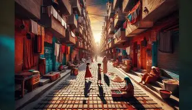

Los barrios como tejido urbano
Buenos Aires se compone de más de 40 barrios que, juntos, forman el entramado social, cultural y económico de la ciudad. No son simples divisiones geográficas: cada barrio es un espacio donde se construye identidad, donde la historia convive con la modernidad y donde la vida cotidiana se expresa en múltiples formas.
En sus calles se mezclan tradiciones antiguas con nuevas tendencias, generando un mosaico urbano único que refleja la diversidad de la capital argentina. Cada barrio es, a su manera, un universo propio dentro de la misma ciudad.

Mapa con la ubicación de los barrios de la Ciudad Autónoma de Buenos Aires.
Economía, turismo y diversidad arquitectónica
La repercusión de los barrios va más allá de lo local: son motores de la economía urbana, con comercios, mercados y restaurantes que impulsan la actividad diaria. Muchos de ellos se convirtieron en destinos turísticos reconocidos internacionalmente, atrayendo visitantes que buscan la esencia porteña a través de su gastronomía, su música, su arquitectura y su historia.
Cada barrio aporta algo único: algunos conservan la impronta colonial y las calles empedradas, otros muestran la modernidad de los rascacielos y los nuevos desarrollos urbanísticos. Esa diversidad es lo que hace de Buenos Aires una ciudad vibrante, en constante transformación, pero siempre fiel a su espíritu.

El Teatro Colón es uno de los símbolos culturales y arquitectónicos de Buenos Aires.
Comunidad y pertenencia
Los barrios generan sentido de pertenencia. En ellos se crean lazos vecinales, se celebran fiestas locales y se transmiten tradiciones que fortalecen la identidad porteña. En sus plazas, cafés y clubes de barrio se generan vínculos que fortalecen la memoria colectiva, siendo también espacios de encuentro para inmigrantes, artistas, estudiantes y familias.
Diversidad cultural
Cada barrio refleja la influencia de distintas comunidades inmigrantes que llegaron a la ciudad. Esa diversidad se nota en la gastronomía, la música, la arquitectura y las costumbres cotidianas, y es justamente esa mezcla la que define la verdadera identidad porteña.

